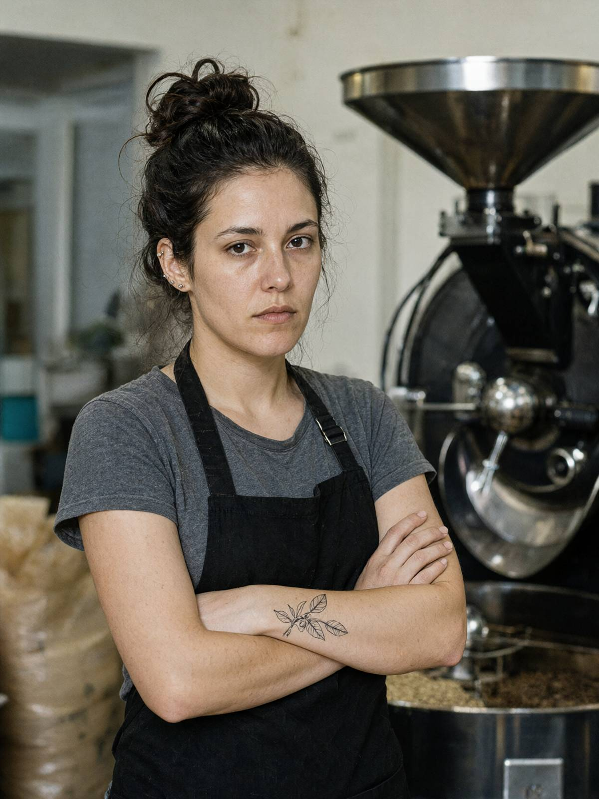

м. Івано-Франківськ, 16 жовтня 2026 року, 17:00–17:45
Місце: СУ ГУНП в Івано-Франківській області, кабінет № 407
Пояснення відібрав: майор поліції Волков Д.С., старший слідчий в ОВС СУ ГУНП в Івано-Франківській області, у кримінальному провадженні № 12026090010002417.
Особа, що дає пояснення: Козак Мар'яна Ігорівна, 29 років, до 15.10.2026 — головна обсмажувальниця ТОВ «Чорне зерно» (обсмажувальня: вул. Пасічна, 77), чемпіонка України з обсмаження кави 2024 р. Тел. +380 63 404 29 11.
Роз'яснення прав. Роз'яснено, що відповідно до ст. 63 Конституції України особа не зобов'язана давати пояснення щодо себе, членів своєї сім'ї та близьких родичів; пояснення дається добровільно.
Питання: Коли ви востаннє бачили Палійчука Василя Івановича?
Вчора, на обсмажувальні. Він приїхав десь о пів на сьому вечора, ходив, нюхав мішки, як завжди. А о 19:40 ми посварились. Я одразу скажу, бо ви однаково дізнаєтесь: посварились голосно, весь цех чув.
Питання: Через що?
Він обіцяв мені 10 % у новій обсмажувальні, а тепер «передумав». Півтора року обіцяв. Я під цю обсмажувальню ростер вибирала, профілі писала ночами, від двох пропозицій з Києва відмовилась. А вчора він каже: «Мар'яно, не зараз. Зараз не час. У мене тут таке, що не до часток». Яке «таке» — не сказав. Я крикнула: "Щоб ти вдавився своєю кавою!" — і пішла. Мені соромно. (Плаче.) Це останнє, що я йому сказала. Ну, майже останнє — я хвилини за дві набрала його з телефона, хотіла ще щось договорити, він послухав секунд двадцять і скинув.
Питання: Що було далі?
Я написала заяву на звільнення, кинула її на стіл у бухгалтерії і о 20:15 пішла. З 20:40 до пів на другу була в барі «Купол» — у подруги, Ірки Савків, день народження. Там нас було дванадцятеро, є фото, я платила карткою за коктейлі, дві чи три транзакції. Можете перевірити все. Додому — таксі.
Питання: Ви казали, що Палійчук був «не свій». З якого часу?
Десь тиждень. Він був сам не свій. Приходив, стояв над ростером і дивився крізь нього. Пив каву і не казав, що вона кисла, — а він завжди казав, що кисла. У понеділок, 12-го, Василь забрав у бухгалтерії список хлопців із "Родини", що торік у нас пакували, — з копіями паспортів. Нащо — не сказав. Список видавала Ольга Степанівна. Я бачила, бо стояла в черзі за накладними.
Питання: Хто така Ольга Степанівна?
Ольга Степанівна — наша головбухиня, ми її всі мамою Олею звемо, вона нам пироги носить. З маком, з вишнею. Вона в «Чорному зерні» ще з тих часів, як була одна кав'ярня. Добра. Всіх жаліє.
Питання: Розкажіть про хлопців із «Родини».
Минулого року, з весни до осені, у нас на пакуванні працювали хлопці з реабцентру «Родина». Хлопці з реабцентру "Родина" працювали без зарплати, "на соціальну адаптацію". Мені це не подобалось. Один, Артем, такий худенький, я йому каву наливала. Привозили їх зранку бусом фонду, забирали ввечері. Вони не говорили між собою, обідали мовчки, як у казармі. Артем казав, що вперше п'є каву, яка не з пакетика. Прізвищ я не знаю, вони казали тільки імена.
Питання: Хто укладав договори з «Родиною»?
Договори з "Родиною" вела Ольга Степанівна, Василь підписував не глядячи. Він взагалі підписував не глядячи все, що не стосувалося кави. Казав: «Оля краще знає».
Питання: Ви знаєте, хто міг бажати йому зла?
Ні. Чесно. Я його вчора ненавиділа хвилин сорок. А потім уже в барі думала, що завтра піду і вибачусь. Не встигла.
Зі слів записано вірно, мною прочитано. Зауважень не маю.